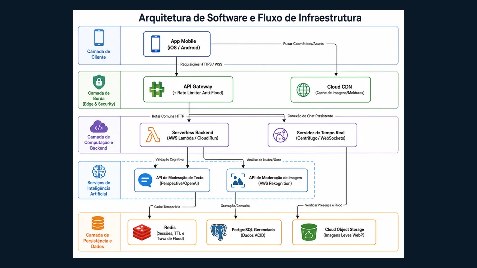

Catálogo técnico
Projetos técnicos
Projetos apresentados pelo problema, pelas decisões e pelo estado real de implementação.

Catálogo técnico
Projetos apresentados pelo problema, pelas decisões e pelo estado real de implementação.
